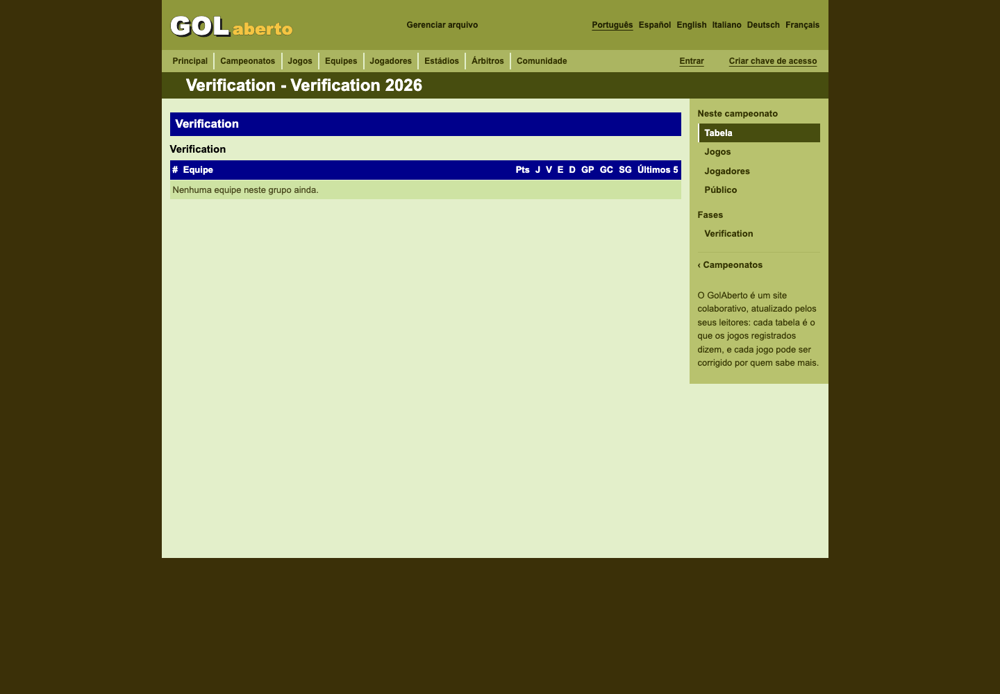
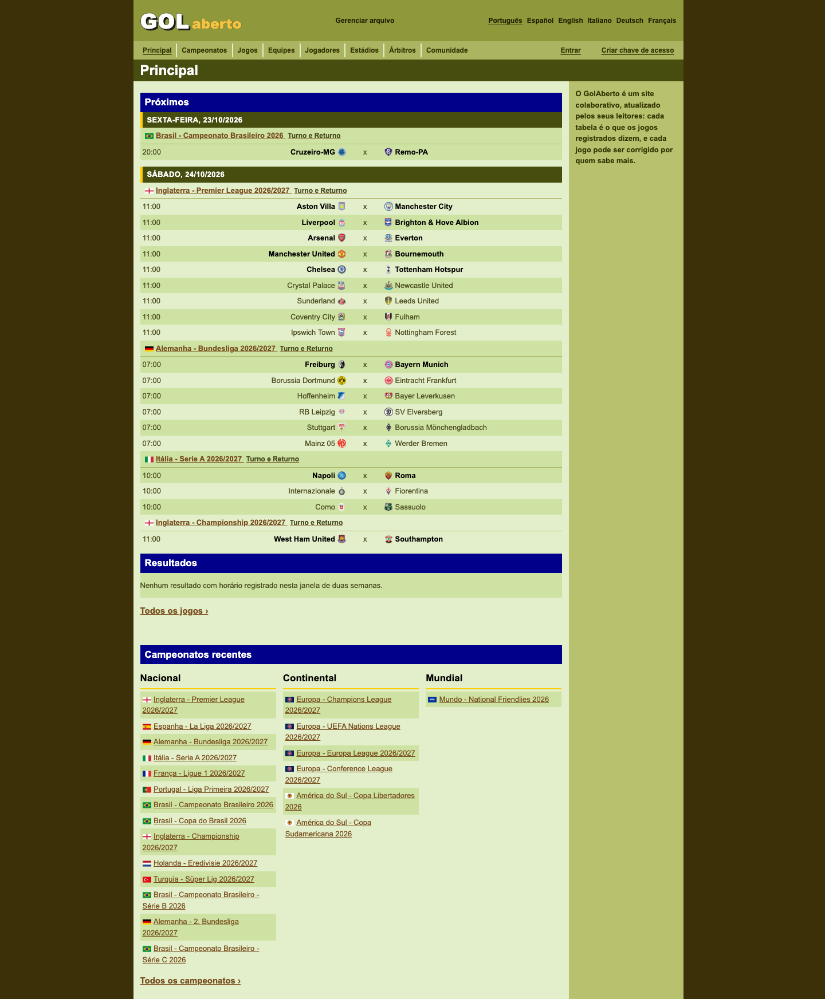
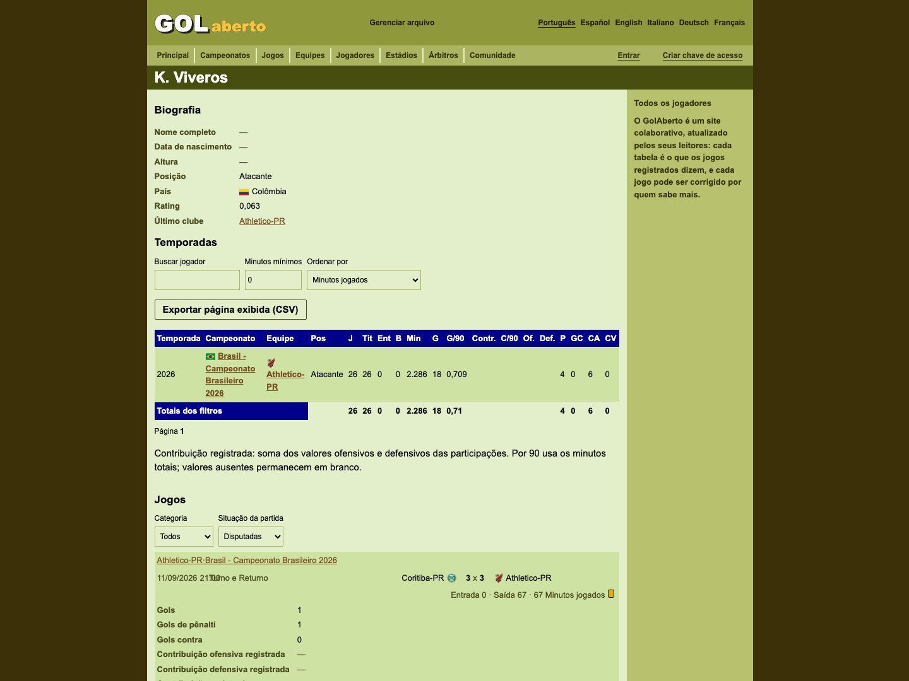
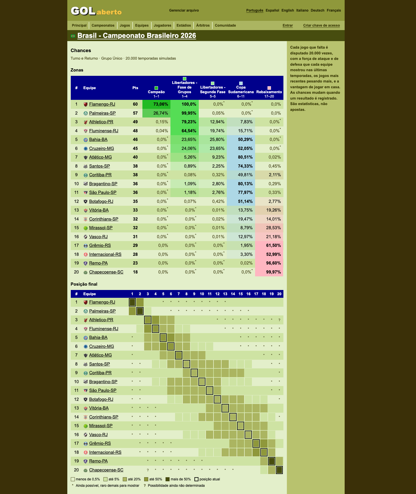
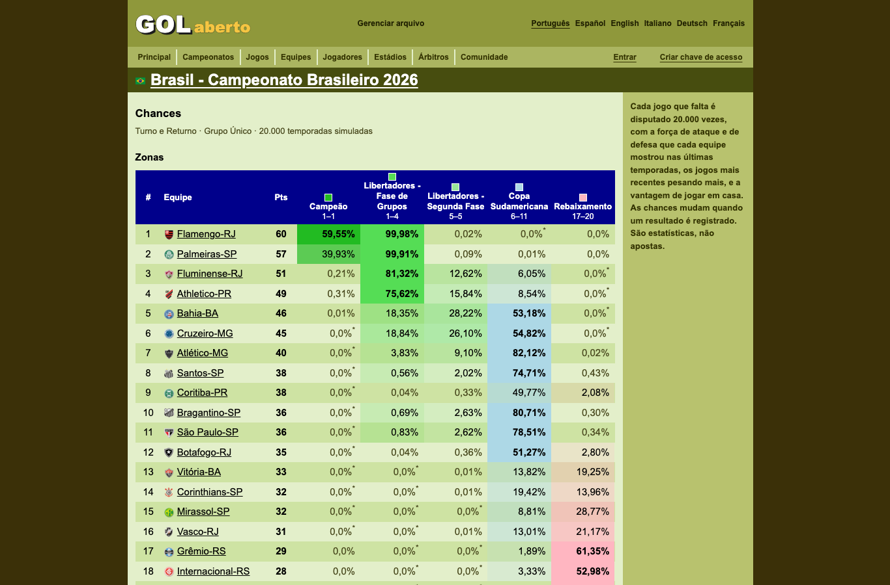
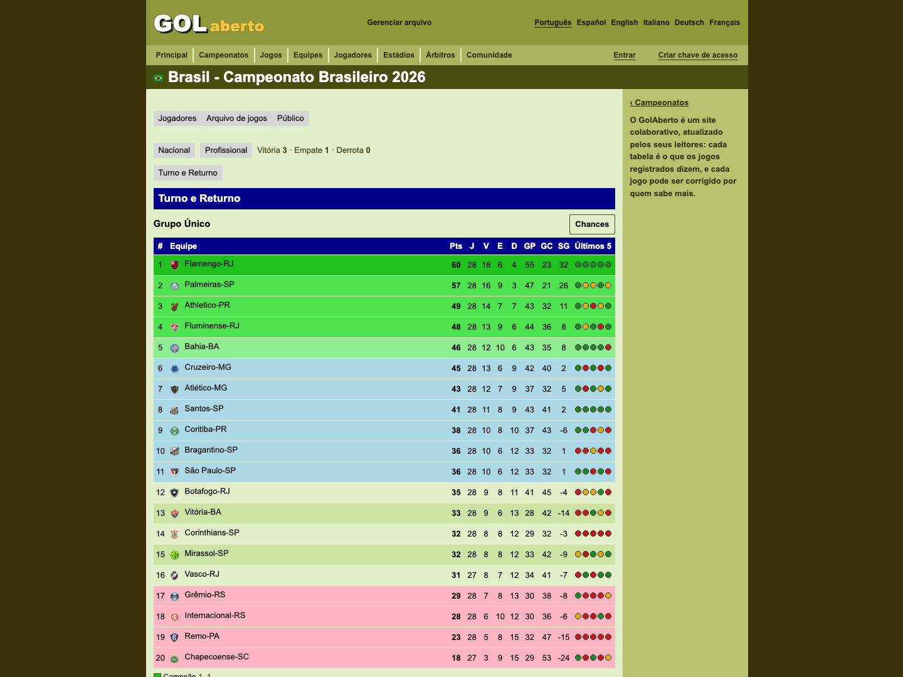
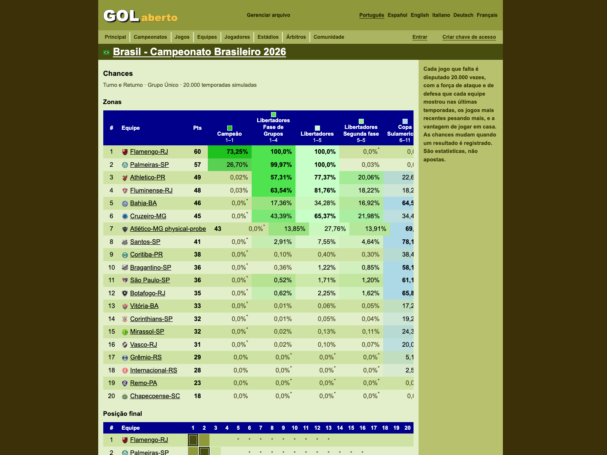
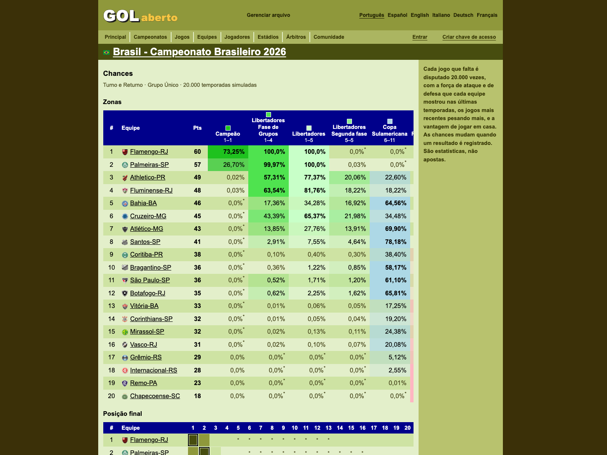
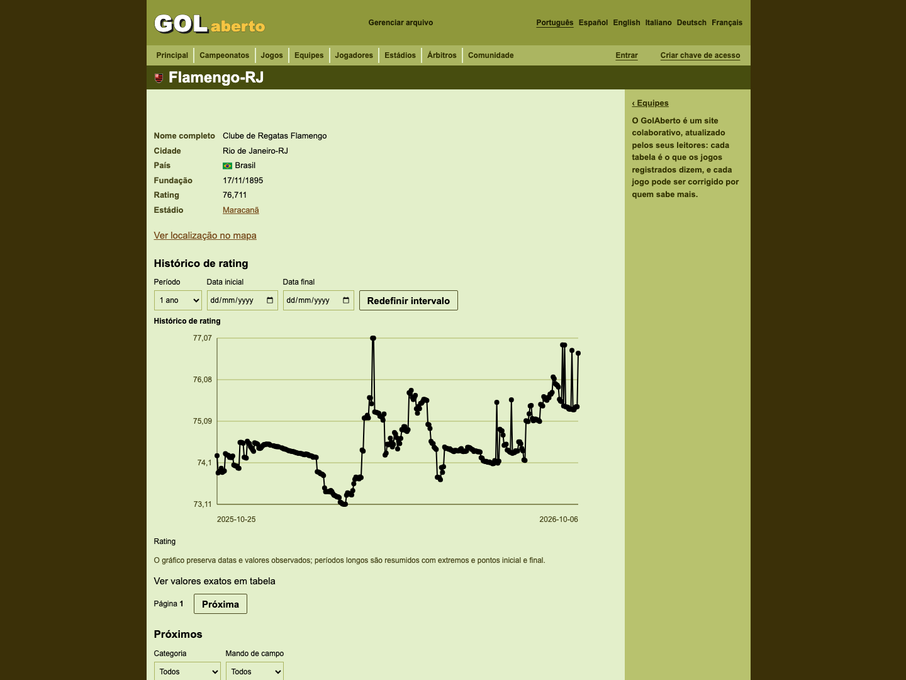

A collaborative football archive with match results, standings, ratings and odds.
6 November 2026 · Cloudflare release · verification failed
A deployed archive is not yet a verified live computation
The release reached golaberto.bonisoft3.com. Its existing database was compressed in place, retaining its generation and authentication state; measured SQLite storage fell from 8.79 GB to 4.38 GB. Migration ordering, the Reader's packaged loader, the renderer's batched-read RPC and authenticated editor claims were corrected. Database listeners now use the same serialized lane as transactions.
A new hosted acceptance journey creates an isolated categorized competition, waits for a zero-goal standing, inserts a 1–0 match, verifies the same browser document changes, then compensates and verifies zero again. It refuses cleanup of concurrently edited rows and retains a recovery record on failure. Seven focused tests cover success and failure paths, including a timed-out insert that may commit later; that uncertain outcome retains recovery records and parent fixtures.

Actual hosted observation: the temporary competition rendered, but its initial standings did not appear. This is failure evidence, not a successful before/after comparison.
The live run did not reach the match insert. A database probe found the first standings computation claimed but not completed, with a later revision pending. After more than five minutes without initial standings and stalled API cleanup, the run was interrupted. Operator cleanup compared the retained fixture contents, accounting for author fields nulled by removal of the temporary account. A subsequent database check confirmed zero remaining fixture rows, editor grants, account or passkeys. No existing archive match was edited.
The final HTTP verification passed 381 immutable assets, six catalogues and the negative-cache probe, but failed with nine HTTP 503 responses using the default deadlines. A separate five-second-deadline run also reported nine timeouts. Earlier attempts also encountered memory resets and a full snapshot queue. The listener fix has a regression test; it is not established as the cause of these hosted failures. After clearing outstanding requests with an object restart, the home page returned HTTP 200 in 2.88 seconds; the full suite was not rerun after that restart. Live statistics, ratings and odds are not verified.
App generation, lint and tests passed. Migration replay passed; native visual integration failed while starting the compute service. Focused renderer, Reader packaging, auth, public-snapshot and drain tests passed. Recorded results and deployed version.
24 October 2026 · merge review · changes required
The full archive changes the merge verdict
The MacBook archive was copied and all 1,502 files verified by SHA-256. Tests now exercise the actual millions of rows rather than extrapolating from seeded fixtures. The deployed application, database and JWT remain unchanged.
Finding
Current result
Restart lost acknowledged DuckDB rows
Pinned native patches fix WAL deletion, append offsets and reopen flags. Nine automatic checkpoints, a crash, another committed append and a second crash retain all 1,025 rows.
Rating replacement erased imported history
Team ratings now explicitly use upserts. Other statistics still replace their results; stale publications remain fenced. Native, direct snapshot and staged publication tests pass.
SQL could escape the intended scratch boundary
DuckDB AST validation rejects dynamic SQL and sequence writes; explicit-column CTAS cannot bypass the guard. Regression tests pass.
JSON compression exceeded the isolate budget
Uncompressed JSON payload columns reduce the full games result heap from 150,536,192 to 72,548,352 bytes. The later appearances join still loses its Worker connection; the full pipeline remains unproved.
Capture blocks request serving
Durable compression coalescing reduces the chances capture from 427 to 315 seconds locally. The shared source queue still blocks interactive requests. A physical-copy experiment reduces this to 27 seconds, which is still unsuitable for interactive serving.
Large captures and unpublished output remain in tables; bounded transfers, numerical steps and generated relational stages retain durable cursors. The canonical DuckDB build uses pinned source hashes, patches, toolchain image and output digests. It is part of the release process. Windows can use the same Docker path, but a Windows host was not tested.
After merging origin/main through release train 10 (fce5fb498), both apps regenerated; Golaberto's full test gate and Pronto's full test and lint gates passed. Final private-Worker packaging and restart integration passed 14 tests, snapshot coordination passed 25, native publication passed 14, and the final query/execution regressions passed 10. Native DuckDB build, lint, test and integration passed; hosted crash/recovery probes passed on the canonical binary. PGlite passed 11 tests with 32 steps. The static emitter now admits generated physical-plan metadata, as the final packaging gate required.
Do not merge or activate archive-scale live computation yet. The remaining gates are a successful full-archive computation within resource limits and capture isolation that keeps source requests responsive. A successful small fixture or durable WAL does not prove either. Native Feldera deployments retain the acknowledged per-table CDC consistency limit.
No new visual design was introduced. The lead reviewed the cross-layer changes with focused backend review through the Pronto skill; Astra/high and the previously reported Sol/high substitution handled the specialist work. Failed paging and BLOB-patching experiments were removed. Gate results · Query evidence · Capture evidence · Hosted recovery · Physical snapshot experiment.
24 October 2026 · production review
The live archive is paged; computation capture must be too
The deployed Worker was downloaded read-only and inspected. PGlite stores files as SQLite blocks, starts with a 16 MiB heap and queries them with bounded PostgreSQL buffers. A public snapshot is a repeatable-read transaction over that storage. The archive’s offline-computed statistics are ordinary stored tables. There is no compute coordinator or computation companion binding in the live deployment.

The unchanged live homepage returned HTTP 200 with no browser errors. Upcoming games and championship links are visible; this production dataset showed no featured standings. This is evidence of the existing deployment, not a new release.
At the start of this review, computation capture materialized every declared source table in JavaScript, then serialized one JSON value. The merge-review entry above replaces that handoff with retained relations and bounded transfers. Production has 3,290,664 player appearances and 8,195,365 rating rows. The three mandatory appearance UUIDs alone require 338.93 MiB of text. Separate computation Workers and streamed RPC do not remove this allocation inside the database object. The full archive therefore needs bounded capture, query and publication working sets before activating these computations; this does not invalidate the existing page-backed serving design.
Review finding
Resolution
SSR composition rejected the new coordinator export
Preserve ComputeCoordinator while composing Cluster; regression passed
Native CDC hid graph edges from cycle detection
Share dependency validation with snapshot coordination; 17 batch tests and native cycle regression passed
Identifier quoting changed a ledgered migration
Preserve valid lowercase spellings, quote protected identifiers; PostgreSQL keyword integration passed and Golaberto’s historical migration is byte-identical
Production capture exceeds the isolate memory limit
Bounded handoff implemented; full-archive execution and source responsiveness remain blocked as recorded above
The production publisher can explicitly retain the deployed JWT secret after verifying its binding, without reading or rotating it. The renderer install uses pinned Node, physical release paths resolve correctly, and server rendering rejects kinetic execution through its complete role alias. Pronto lint and its full test suite passed, both apps regenerated, and the full production bundle, publisher preparation and Wrangler dry run passed. No production code, data or secrets were changed.
Two Astra/high backend reviews covered native delivery and the edge upgrade path; the lead verified the live artifact, fixed deployment seams and inspected the screenshot. Validation · Production counts · Live read checks.
CI follow-up, 24 October: the compiler now checks the authorization fixtures with pinned imports and excludes their checkout-only helper from installed modules. Mecha browser tests use their explicit import map and expect 403 for denied function execution. Native startup retains the optimized Feldera compiler and allows up to 20 minutes for optimized compilation and gives each sequential program 30 minutes of startup grace; Golaberto’s two programs receive 60 minutes. Starting and stopping pipelines retain their 10-minute deadlines. A fake-clock regression verifies late compilation success, bounded waits and immediate compiler errors. Pronto’s full local suite, the 42 cluster tests and the browser permission suite passed. Captured gate results. Remote CI is being rerun; these local results do not claim a green remote run.
Homepage readiness: CI found that an empty feed finishing last could label the whole screen empty while games, standings and odds were visible. The interpreter now combines the state of all top-level lists. Three failing regression cases reproduce the race; the fixed ordering, live updates and cleanup pass 10 suites with 35 steps, plus 10 interpreter smoke tests and Omnishell type checks. The full local Golaberto acceptance gate passed. All applicable CI checks passed on 2d56e9cd0, including both complete app suites and all three bootstrap platforms. The subsequent merge from main preserves its release/presenter changes alongside Duckstream; both apps regenerated, Pronto lint and its full test suite passed, and focused release/workerd tests passed. The merged revision requires a fresh CI run; no new visual capture is claimed.
24 October 2026 · review fixes · verified
Compute independently. Publish coherently.
Golaberto keeps its incremental native Feldera relations and unchanged numerical WASM. Cloudflare now has a separate computation-coordinator Durable Object: auth, CRUD, shape delivery and the database clock continue while computation runs or an unrelated batch exhausts retries. Capture and publication still serialize against the database; query and WASM execution run elsewhere.
Compact claims carry an identity and database generation. Snapshot and result bodies use streamed Responses; actual workerd tests moved 33 MiB in each direction. Retry inputs remain durable, independent successes do not erase failed-job diagnostics, and reset generations reject stale publications.
Final Cloudflare odds: 20 teams, 100 zone probabilities and 400 position probabilities in this group.

K. Viveros: 18 goals and 2,286 minutes. The browser reported zero page errors.
The deployed check verified 1,522 games, 64 team ratings, 725 player ratings, 82 team-chance rows, 300 zone-chance rows, 1,604 position-chance rows, 513 game-importance rows and the legacy projections. Guest writes could not alter derived rows. Publication preserved the existing preview database; no reset or production-route change was needed.
Native bootstrap reads after acquiring source locks. First execution and retries consume persisted JSONB inputs. Full publication compares PostgreSQL keys by type and rejects canonical duplicates. Feldera SQL references its injected environment credential. Wrangler and Node resolve through checked-in pins and the bootstrapped mise, including fresh npm shim installations. SQL migration errors return definitive 422 responses; lost restart responses receive bounded retries.
Gate
Observed result
Golaberto generate, lint and test
Exit 0; real application CUE export and migration-cycle regression also passed
Final native integration
Exit 0: replay, visual, acceptance, constraints and live statistics
Cloudflare publish and browser
Exit 0; retained data, populated statistics and protected derived writes
Shared runtime/release checks
Pinned tools, bootstrap/publication, large payloads, failure isolation, migration refusal and native authorization upgrades passed
The first native visual run timed out on the new-player page. The isolated final visual run passed, followed by all acceptance and live-statistics checks. The established visual oracle was retained and screenshots were inspected. Validation record · Browser assertions · Shared runtime evidence.
Claude Opus 5.5/high completed two follow-up reviews. Confirmed findings were fixed with focused regressions and a final lead review, without a third external round. Astra/high and Sol/high handled bounded implementation slices; Sol substituted for the unavailable Terra route. First follow-up · Second follow-up.
Cloudflare remains snapshot mode under the isolate memory limit. Paid was tested; Free admission and full-archive capacity remain unproved. Native CDC remains per-table. Kubernetes/GKE configuration and upgrade commands were tested without deploying a cluster; native Windows remains unverified. Golaberto intentionally has no Pages target. The PR remains ready for review and unmerged.
24 October 2026 · Cloudflare release integration
Live computation without a Container.
The release now packages three Workers: the PGlite/Cortex coordinator, private DuckDB Queries and private static SES Compute Durable Objects. Service bindings isolate their memory and capabilities. The release statically bundles the pinned upstream DuckDB core, JSON/ICU extensions and computation closures; it does not rebuild DuckDB or compile JavaScript at runtime. The existing pure WASM algorithm stays unchanged.
Durable captures and retries feed one transactional publication with its receipt. Queries preserve declared ordering and validate typed columns, nullability, bytes and exact integers before computation and publication. Companions deploy before the coordinator, and their names hash the emitted artifacts.
Twenty teams, 100 zone cells and 400 position cells.K. Viveros: 18 goals and 2,286 minutes.
The browser verified 1,522 games, 64 team ratings, 725 player ratings and 82 team chance rows. Odds and player pages rendered; a guest derived-row overwrite changed nothing. Both pages reported zero browser errors. Browser assertions · Validation record.
Gate
Observed result
Application doctor, generate, lint, test and full native integration
Exit 0 for both applications
Pages and SSR regressions
30 passed under pinned Deno 2.9.7
Native portable boundaries, snapshots and static cages
17 passed
Actual workerd and deployed Cloudflare browsers
Packaging, restart/replay, typed boundary errors and successful computation passed
Claude Opus 5.5/high identified ordering and immutable artifact naming issues; Agy Gemini 4 Argon/high identified missing typed boundary checks and explicit error responses. All were fixed and both follow-up reviews cleared them. Agy ran with a TTY and its supported --dangerously-skip-permissions flag. Claude follow-up · Agy follow-up. Package and cage implementation received independent security review; the lead inspected screenshots and consolidated shared validation. The existing visual oracle was retained.
Pages keeps snapshot execution; native Feldera keeps incremental maintenance. Cloudflare is still whole-snapshot work under the 128 MiB isolate limit. Tests used Paid: Free admission and full Golaberto archive capacity remain unproved. Old companion Workers remain available for in-flight captures and rollback, with manual retirement. Production routes were not changed. Runtime contract.
Earlier Container release and evidence
23 October 2026 · portable runtime and deployment
Computed odds on Cloudflare.
The edge deployment at this stage computed statistics after source changes. Its Cortex coordinator captures PGlite inputs, a private DuckDB Container runs the existing pure WASM, and one database transaction publishes results with a receipt.
Open the isolated Cloudflare preview. Production routes were not changed. Native Kubernetes and GKE manifests now include Feldera and the remaining pipeline services; those cloud clusters were not deployed in this turn. Golaberto no longer advertises a Pages target.
AfterDurable alarms resume captured work after eviction; new changes schedule another batch.
PublicationOutputs and their receipt commit together. Retained revision counters reject stale responses after reinstallation.
StorageCompleted snapshot payloads are reclaimed. Pending retry inputs remain immutable.
1,522source games verified on Cloudflare
82team chance rows computed
725player ratings published

Twenty teams, 100 zone cells and 400 final-position cells rendered from computed data.The SQL projection drains populate player statistics alongside ratings and odds.
The live browser check verified every expected table count, hydrated odds and player pages, and zero page errors. A guest overwrite returned an empty result and left the derived row unchanged. Browser assertions are reproducible with tests/portable.ts --url <preview>.
Gate
Observed result
Sayt doctor, generate, lint, test
Exit 0
Sayt integrate
Exit 0: replay, visual, acceptance, constraints and native live statistics
Portable coordinator
13 tests passed, including retry, atomic publication, removed/reinstalled definitions and bounded capture storage
Seeded ratings, chances and nine SQL drains completed; restart had no pending work; Cloudflare publication and live browser test passed
Independent Astra/high backend review found two lifecycle defects: retained full snapshots and reused identities after removal. Both were fixed and re-reviewed with no remaining actionable findings. The lead reviewed native deployment changes, inspected screenshots and made the final simplification pass. The established UI oracle stayed unchanged; Astra/high supplied the implementation/review seats where the preferred Terra route was unavailable.
This earlier release used whole-snapshot work and required Workers Paid plus Containers; the Durable Object release above supersedes it. This proves the seeded dataset, not the 7 GB production archive or production throughput. Native Feldera retains incremental relational maintenance and its documented per-table CDC boundary. See deployment limits and GKE setup.
23 October 2026 · CDC skew regression
Incomplete arrivals cannot poison a calculation.
Golaberto statistics keep their immutable retry protocol. The SQL now prevents missing related identities from entering a numerical request while CDC tables catch up.
BeforeA game could arrive before its team. Capturing it made every retry repeat the same missing-team error.
RatingsGames join both teams; goals join their player. Missing dependencies withhold those rows.
OddsA ranked group requires every known member’s team. It cannot reach the calculator with a missing member array.
ConvergenceLater parent arrivals change the maintained joins. Restored inputs match the settled baseline exactly.
The contract still permits intermediate results from per-table progress. This is not a database-wide transaction cut, and previously poisoned durable claims are not migrated by changing the query. The WASM algorithms and coordinator retry policy are unchanged.
8 passed. The new missing-team regression failed against the old generated queries, then passed after regeneration; missing players and restoration are covered too.
Generation, lint, test and integration exited zero. Astra/high backend review found no actionable issue. The simplification pass kept the fix in the existing SQL views.
The combined native test invocation hit a Deno pending-promise event-loop error after ratings passed. Each native test subsequently exited zero in its own process; the combined invocation is not claimed green. Existing screens supplied the oracle; no interface redesign was needed.
23 October 2026 · Native CDC runtime
Incremental inputs. Live odds.
Feldera now consumes PostgreSQL CDC and maintains the pending relation changes. Cortex captures affected partitions, the unchanged WASM computes their results, and PostgreSQL publishes owned rows with the durable receipt.
8 delta rowsThe first odds capture after one score edit, in one phase.
0 restart workNo partitions recalculated and no checked sink rows rewritten.
19.2 secondsObserved live change in this local trial, without reload.
Before: 73.06%.

After: 59.55%. Undo restored the original value without navigation.
Browser evidence records the same document and zero browser errors. Both screenshots were inspected. Runtime captures show ratings subsequently affected other dependent phases: the eight-row first capture is not the total cost of changing every rating dependency. The live stack uses the local source implementation; this is not a production benchmark.
What is incremental now
Source CDCIndexed row-local carriers, maintained in the source transaction, feed Feldera's native connector.
Pending differenceMaintained EXCEPT ALL relations identify unconsumed changes. No per-batch source snapshot or full-result extraction.
Durable partitionInputs commit before acknowledgment. Phase-scoped odds and global ratings retain immutable retry inputs.
The original snapshot-fed adapter is replaced on the native path. Pages retains DuckDB snapshots. Conduit and Redis still serve other Golaberto pipelines; native statistics no longer use their wakeups. Durex and Cortex remain the internal execution boundary, with no Airlock dependency.
One consistent capture
Verification after storage recovery exposed a real race: pausing Feldera stops input readers asynchronously, while buffered circuit steps can continue. Capture now reads all additions, removals and validation relations in one query against one immutable circuit snapshot. A real-engine regression checks aggregate/detail agreement under concurrent writes and requires exactly one query.
Fresh-start browser checks now wait for rated odds to converge: an idle coordinator does not mean that a prior ratings publication has reached downstream CDC. The numerical bounds, exact undo and no-reload assertions remain. Native legacy ingestion starts independently of compute; snapshot deployments retain their startup dependency.
Recovery and evidence
The actual application restart rebuilt the OSS circuit in 58 seconds under test load. Both subsequent captures had zero partitions and zero delta rows. Fingerprints including PostgreSQL row versions stayed equal for ratings, zone chances, position chances and game importance. Source reconstruction remains a startup cost.
Detail rows and aggregates agreed through 12,288 source-row updates. All deltas and validation checks used one HTTP SQL request.
Backend review used Astra/high. Its cascade-repair and interrupted-bootstrap ownership findings were fixed and re-reviewed without blockers. Live testing also exposed and fixed paused-pipeline resume and replication-backend disconnect races. The capture fix received a further Astra/high review with no actionable findings. The lead simplification pass retained shared row normalization and publication helpers. Existing screens supplied the visual oracle.
Limits. Native CDC has per-table progress, not an atomic PostgreSQL-wide source cut. It is not admitted for computations requiring the latter. Ratings can still require global numerical work; source reconstruction scans current data. No archive-scale throughput claim, production deployment or native Windows verification is made. The disk-exhaustion blocker is resolved. The local app and legacy transform are running again at localhost:17702. The PR remains draft for handoff; no merge or deployment was performed.
Earlier snapshot-fed Feldera delivery
23 October 2026 · Golaberto · Duckstream
Live odds, backed by Feldera.
Golaberto now runs its ratings and odds relations through authored Feldera SQL, keeps the original numerical WASM, and delivers committed statistics to an open browser through Electric.
Implemented · reviewed · verified locally · not deployed
Feldera SQLMaintained joins and aggregates. The stock plan also generates DuckDB snapshot queries.
Pure WASMUnchanged fits and simulations. Exact successful requests can reuse durable cached answers.
PostgreSQL → ElectricAtomic replacement, freshness guard and receipt; live browser updates.
Ratings and chances declare typed sources and sinks. Cortex and Durex coordinate internal work; Airlock is not part of this publication boundary. Pages selects DuckDB snapshot mode and removes Feldera runtime dependencies.
Historical rating selection remains strictly before kickoff, including the one-microsecond boundary after midnight. Duplicate team/day ratings fail explicitly. The pinned engine cannot compile text or UUID ASOF keys, so four exact 32-bit integer pieces preserve every UUID bit in the join. Calendar windows, UTC conversion, f32 rounding and numerical request order remain equivalent to the previous implementation.
What changed from the previous path
Handwritten DuckDB queries are now generated from stock-Feldera plans. Successful pure jobs are retained in a bounded private PostgreSQL cache keyed by module bytes, exact input, command and execution host. Changed requests still compute; complete sink publication still applies freshness and deletion rules. The numerical JavaScript helpers and WASM module are unchanged.
The browser trial used 1,522 games and 68 teams. After restoring the score, the instance had no pending computations. Repeated unchanged jobs in the acceptance stack produced zero row updates; this is correctness and reuse evidence, not a production capacity measurement.
Known limits. Source capture, materialized-view extraction and complete publication still do snapshot-sized work. A changed historical rating fit remains a full numerical fit. No production archive was available locally, so archive-scale timings are unmeasured. The archive preservation profile still disables ratings replacement and history capture. Conduit and Redis still serve the remaining legacy pipelines.
Verification
Check
Observed result
Golaberto doctor, generate, build, lint, test
All exit 0
Full integration
Replay, visual, constraints, browser acceptance and live-statistics targets exit 0
9,584 ms, same document, no errors; rollback restored the probability
The first app integration exposed two SSR tests racing initial statistics publication. They now wait for the durable completion boundary before checking server-rendered rows; hydration equality and live-update assertions remain intact. The full rerun passed.
Backend review found ambiguous equal-date ratings; the shared carrier now refuses them and both paths have regressions. Re-review found no remaining findings. QA reviewed the startup wait without findings. Existing screens and the IR remained the visual oracle; both screenshots were inspected. The simplification pass removed the unused UUID-cast extension and avoided allocations in Unicode ordering.
Calendar boundaries repaired; cold startup made explicit
Agy caught a seven-year cutoff changing when leap-day subtraction clamps two timestamps onto the same day. The fix selects the latest game before taking its shifted value. The same rule now protects the earliest phase game at the four-year century boundary (2104 → 2100). Both regression cases failed before the change and pass against the legacy query oracle afterward.
33 testsNumerical and query equivalence passed
2 native testsFeldera matched snapshots across ten fixture stages
Before: 73.06% title probability.After: 52.33%, delivered to the same document. Undo restored the original value.
Browser evidence records 5,475 ms and zero browser errors. The retained pure-job cache stayed at 17 entries: this is warm seeded evidence, not a production latency promise. Both screenshots were inspected. Numerical results and native engine results preserve the focused checks.
Golaberto doctor, generate, build, lint, test and full integration all exited 0. Acceptance includes the previously failing timezone case and the separate live-statistics target. Initial publication now has a cold-compilation budget before browser assertions; subsequent updates retain their 180-second limits. The broken plugin documentation link was fixed and both link tests pass. A broader plugin test run encountered untrusted temporary Mise configurations; that run is not claimed green.
Plausible's full integration passed in an isolated rerun, including cold-start/realtime, appearance, replay and visual targets. An earlier concurrent invocation lost its Docker bridge even though its test container exited successfully; sequential execution avoids that runner interference. After these full integrations, origin/main advanced to ebcf98ca8. Its release-pin merge conflicted only in a generated Plausible manifest; regeneration resolved it. Both app generate/lint gates and all six query tests passed after the merge. Application runtime files remain unchanged from the integrated revision. GitHub checks must pass on the pushed revision before merge.
Agy's focused re-review and the Astra/high backend review found no further actionable issues. The simplification pass retained the small extrema joins and shared regression fixture without extending the translator. The existing screen remains the visual oracle.
The deployment audit confirms that Conduit/Redis still carry compute wakeups and four remaining Golaberto pipelines. Snapshot capture/diffing, complete output extraction and numerical work remain scaling limits. Native Windows is not validated; the default compiler still assumes Unix UID/GID. See Statistics for the current contract.
Earlier delivery entries
Historical record: older entries describe the previous implementation. Internal durable work now uses Durex, native Feldera is adopted for these relations, and unchanged pure jobs can be reused. The current contract and remaining limits are described above and in Statistics.
2026-10-20 — PR integration and review
Status: verified locally against current main; not deployed.
The coordinator now follows the
current Mecha compiler's serializable transaction contract. Serialization
failures and deadlocks retry publication without recalculating frozen inputs.
The compiler retains browser machine surfaces and contracts while omitting those
surfaces for server-only work. The generated artifact and release toolchain lock
were refreshed after integrating upstream changes.
Independent backend and QA reviews found no actionable findings; a second backend
review of the integration also found none. These seats used Astra/high. The lead
performed the simplification pass and inspected the screenshots; existing screens
remained the visual oracle. A real PostgreSQL conflict regression captures and
calculates once, publishes twice after rollback, and verifies the committed sink,
machine and Airlock outcome share one transaction ID.
App doctor, generate, build, lint and test exited 0. The hybrid suite passed 21
tests; focused compiler/contract/spike tests passed 18; coordinator/publication
passed 18, including 12 coordinator cases; main compute runtime passed 18. The
final artifact whitespace normalization passed five focused tests including seven
PostgreSQL steps. Docs links and diff whitespace checks passed.
Fresh-stack source integration passed all four browser cases in 26 seconds:
Two earlier attempts stopped during build setup: an outdated release lock, then
an omitted monorepo source-mode environment setting. The lock was regenerated
and the explicit source-mode command passed. The running compute container's
coordinator, publisher, Airlock adapter and generated SQL matched this checkout.
Using the same built images, Flamengo's title probability changed from 73.06%
to 52.33% in 8.2 seconds without reloading:
before and
after. Goals and goals per 90 changed
from 18/0.709 to 19/0.748 in two original reader documents in 1.2 seconds:
before,
after and
second reader. Undo restored
the values. These are observed timings, not guarantees. After undo, both machines
were idle and all 11 Airlock records had completed outcomes. The isolated test
containers, volumes and network were removed; the original local stack remained
healthy and unchanged.
The design
now explicitly bounds the proposed DuckDB adapter to full relation recomputation
and result comparison. Reusing existing CDC with retained DuckLake snapshots and
append-only history is the next direction; this PR does not implement that
history path or incremental Feldera execution.
2026-10-20 — Cortex coordinates Airlock work
Status: implemented and verified locally; not deployed.
The minibatch lifecycle now uses a compiled Cortex machine through Mecha's
bounded reducer runtime. Airlock gained internal durable work: entering an
invoking state enqueues a Graphile delivery, and publication commits the sinks,
hook, work outcome and machine completion together. The TypeScript worker
captures inputs, calculates and publishes; it no longer owns lifecycle
transitions. See the
compute machine contract and
Airlock contract.
The local upgrade preserved completed revisions from the drained previous
coordinator. Undrained legacy state and incompatible installed compiler
fingerprints fail explicitly. After browser edits and undo, both machines were
idle with requested and completed revisions equal; all 17 recorded Airlock
invocations had committed completion outcomes.
What using it showed
The same live tests passed after replacing only the compute container. Flamengo's
title probability changed from 73.06% to 52.33% in 8.5 seconds without reloading:
before and
after. Goals changed from 18 to 19 and
goals per 90 from 0.709 to 0.748 in both original reader documents in 948 ms:
before,
after and
second reader. Undo restored the
values. All screenshots were inspected. These timings are local observations;
the goal projection and dependent metric still arrive separately.
Verification
App Sayt doctor, generate, build, lint and test: exit 0.
Mecha generation and Pronto doctor: exit 0.
Machine/compiler suite: 22 tests passed, including generated-artifact parity.
Airlock suite: 36 tests passed, including internal worker SIGKILL recovery,
transactional outcome rollback and isolation from other workers.
Compute suite: 64 tests passed; the final expanded coordinator suite passed
all 11 cases after the review fixes, including legacy migration, same-transaction
publication, forged-completion rejection and permissive-default-ACL isolation.
Host browser suite: four tests passed in 22 seconds.
Fresh-stack current-source integration using the command below: exit 0,
four browser tests passed in 26 seconds. Its containers and volumes were
removed; the primary local stack remains healthy.
Review found inherited default grants could expose private machine objects,
and automatic outcome transitions could bypass fresh invocation entry. Both
were fixed with regressions; the second backend review had no remaining
findings. Durable implementation and review used Astra/high; the lead verified
evidence and performed the simplification pass. Existing screens remained the
visual oracle.
Remaining scope
Golaberto still runs handwritten DuckDB SQL and coalesced full numerical fits.
The Feldera typed-plan translation remains a separate compiler probe, with
HOP/TUMBLE lowering and type equivalence unfinished. Production CDC bootstrap,
recovery, event-time progress and change publication are still required.
Conduit and Redis remain in the transport/projection path. Machine receipts and
Airlock outcomes also need a retention policy before sustained production use.
2026-10-19 — Live statistics through durable minibatches
Status: implemented and verified locally; not deployed.
Golaberto now uses the compute service's durable minibatches for ratings and
chances. Previously, transport delivery waited for a full computation and its
separate HTTP writes. Now PostgreSQL accepts a coalesced request, Graphile runs
it against retained inputs, and one transaction publishes the numerical sinks,
completion hook and revision receipt. Existing screens remain the visual
oracle: committed changes reach open readers through Electric.
Recording a heavy Flamengo defeat changed its title probability from 73.06% to
52.33% in 9.0 seconds on the same document. Undo restored the original probability.
Compare before with
after.
Adding a K. Viveros goal changed 18 to 19 goals and goals per 90 from 0.709 to
0.748 in two already-open readers. The dependent metric settled in 1.1 seconds
in the final capture; undo restored both values. Compare
before,
after and the
second reader. These are observed
local timings, not latency guarantees. The raw goal projection and its metric
drain arrive separately; the test waits for both and rejects a page reload.
All screenshots were inspected. The four live acceptance tests cover chances,
standings, goals with their dependent rate, and appearances, including undo.
Verification
Commands ran from the repository root unless stated otherwise.
just sayt -d apps/golaberto doctor, generate, build, lint, and test: exit 0.
just sayt -d libraries/mecha generate: exit 0.
LC_ALL=C LANG=C mise x -- task test:compute, from libraries/mecha: exit 0, 61 tests. After the isolation review fix, all eight coordinator tests and six publication tests passed again; type checks and lint passed.
Real Redis/Connect transport integration: five tests passed.
Final host browser run: four tests passed, including dependent goals-per-90 updates in both readers.
Fresh-stack current-source integration: exit 0, four browser tests passed in 27 seconds:
The app lock now matches its existing Pronto and Sayt version pins. The Docker
CI envelope using released Mecha images could not validate this unreleased core
change: its pinned database image lacked an initialization script. The successful
Compose integration above builds the current local sources. A Docker Desktop
BuildKit panic interrupted one attempt; restarting the daemon preserved the
original app data, and the retry passed.
The Pronto backend review found a transaction-isolation compatibility issue;
publication now resolves the service role's isolation before beginning its
transaction. A real coordinator test verifies read committed, repeatable read
and serializable, including runtime role changes and a shared transaction ID
for sinks, hook and receipt. Re-review had no remaining findings. Implementation,
live evidence and durable review used Astra/high; the lead coordinated gates
and the simplification pass. No new visual-design choice was required.
Remaining scope
Conduit and Redis still carry invalidations and existing projections/drains.
The solvers still perform full fits, coalesced into minibatches; partial group
replacement, the Feldera runtime/replay adapter and transport retirement remain
future work. Publication is atomic within each numerical batch, not across all
raw pipelines and drains. Retained inputs consume PostgreSQL space, and the
initial runtime deliberately runs one numerical computation at a time.
2026-10-20 — Typed computation boundaries and broader SQL admission
Status: implemented and verified locally; not deployed.
Ratings and chances now validate their seven numerical sinks against the entity
schemas. Ratings' UUID query inputs also use typed capture. Mecha reuses its
portable value contract; Pronto supplies the table and declarations without
becoming a Mecha dependency. The numerical modules and WASM binary are unchanged.
The existing screens remain the visual oracle; no new visual design was needed.
Recording a heavy Flamengo defeat changed its title chance from 73.06% to 59.55%
in 6.4 seconds in the same open document. Undo restored 73.06%. The inspected
before and
after captures show the updated probabilities
and standings. This is a local observation, not a latency guarantee.
Microbatching remains the Cortex scheduling policy. HOP/TUMBLE describe event-time
membership and are not required for these numerical batches. Native PostgreSQL
and DuckDB stages can cover operations outside the admitted Feldera subset;
those dependencies and typed boundaries must remain explicit. The
native contract and
backend design
record that division. Golaberto still uses native DuckDB queries; the expanded
Feldera translator is a spike, not its production query path.
Verification completed with exit 0:
App Sayt doctor, generate, build, lint and test; Pronto CUE emission fixtures;
Mecha generation. Generated container specs contain all fifteen types and all
seven sink schemas. Built compute source hashes match the worktree.
Compute Sayt doctor/build/lint/test/integrate under pinned Deno 2.9.7: 72 tests
and a real PostgreSQL → DuckDB → PostgreSQL round trip for all fifteen types.
The default Docker builder timed out fetching image metadata; the existing
container builder completed the same current-source test. Earlier app admission
failed because Deno discovered the browser package workspace through import-map
paths; a local source-import bridge resolved that without duplicating contracts
or changing dependencies. An emitted-config inspection caught stale generated
metadata; explicit regeneration preceded the successful stack test.
Implementation and backend review used Astra/high through the Pronto skill;
the lead handled cross-layer wiring, gates, visual inspection and simplification.
Review caught a bounded VARCHAR cast losing its width during translation. The
translator now refuses it, with numeric and text stock-export regressions.
Re-review found no remaining actionable issues. The simplification pass kept the
shared canonicalizers and avoided introducing another type implementation.
Conduit and Redis remain. Production Feldera artifact loading, CDC/DuckLake
integration, retention and a general multi-engine stage graph remain follow-up
work; numerical fits still recompute complete results per accepted batch.
25 October 2026 — large odds results fit; archive publication remains blocked
The numerical algorithm is unchanged. Physical ASOF joins now partition equal keys into 64 buckets, and the disk-backed engine avoids a window optimization that expanded source validation into a large self-join. All four full-archive chances relations match the original logical SQL at a 32 MB engine budget. A sufficiently skewed key can still exceed that budget and fail.
Previously a large odds group exceeded the output limit. The Compute Worker now permits 16 MiB of private WASM stdout, retains only finish-relevant fields in a checkpoint of at most 4 MiB, and emits 256 KiB pages. Commits and RPC remain capped at 8 MiB. Restarting after the compact checkpoint does not repeat WASM.
Observed proof
Result
All ratings outputs against the independent reference
1,382,587 team-history rows, 41,155 player ratings and 3,931 phase evaluations match exactly. Diagnostic forks and four disjoint shards are explicit; production execution remains sequential.
Largest odds group on hosted Cloudflare, 128 MiB
218 teams; 43 durable steps; all 47,762 output rows exact; completed replay stable. Both temporary Workers deleted. The tested bundle used the same 16 MiB stdout threshold now integrated in source.
Full chances archive
Paused at revision 13814 after 11,528 of 15,518 groups; the resumed verification below subsequently completed the comparison.
Atomic ratings publication
All three sinks staged, sealed and survived restart. Final publication was interrupted after about 596 seconds wall time and 505 seconds of local worker-process CPU, with a source read still queued. Receipt and rollback recovery remain unverified.
The publication experiment crossed the 15 GiB disk-headroom floor. Completed diagnostic copies were removed; original archives, output evidence and resumable state are preserved. All owned archive Workers are stopped. Process CPU and RSS are not hosted isolate billing or memory measurements.
A narrow additional fix replaces per-row source notifications with nonempty statement transition tables. Bulk writes now avoid repeating identical table-level bookkeeping, while zero-row writes, conflict no-ops, rollback, truncation and trigger migration retain their tested behavior. This optimization has not yet been measured on full archive publication and is not claimed to resolve that blocker.
Gates observed at exit 0: Golaberto full Sayt tests; Pronto full Sayt tests and lint; edge suite (60 tests, 21 steps); bounded numerical tests (10); paged-compute budget tests (6); snapshot coordinator (38). The compiler's 12 physical regressions passed. Astra/high backend reviews returned no findings for paging/ASOF and the notification migration. The lead handled integration and one simplification pass; no visual design changed.
No deployment or merge. Remaining acceptance includes interrupted-publication recovery and capacity, the remaining chances groups, and first-query memory after sustained ingestion. Capacity evidence · Merge review
25 October 2026 — the complete numerical archive matches
Resuming the retained computation completed every one of the 15,518 chances groups, including the largest 218-team group, without replaying completed history. The final state is revision 22036. All 1,134,231 output rows match the independent original logical-SQL/pure-WASM reference exactly, including canonical file hashes.
Output
Exact rows
Team chances
58,440
Zone chances
81,522
Position chances
988,850
Game importance
5,419
The actual Query/Compute execution retained its 32 MB DuckDB budget. Native DuckDB was used only after completion to export finalized outputs from a read-only SQLite snapshot. Retained capture identities and controlled artifact adaptations remain explicit in the evidence; this is not a pristine production deployment.
The warm-import failure is fixed
A fresh uninterrupted import reproduced the failure: DuckDB exhausted its budget while creating an automatic checkpoint. Its built-in checkpoint threshold is now 1 MB in the disk-backed profile. With only that setting changed, 8,672,468 source rows imported in 926 seconds in the same worker; the formerly failing join then took 98 ms. No reopen, eviction or fallback was used. The numerical engine binary and memory limit are unchanged.
The package build, lint, ten unit tests and workerd integration all exited zero. Integration now exercises repeated batch inserts and their persisted contents after reopen. The focused backend review returned no findings; the lead's simplification pass kept the existing configuration mechanism.
Publication recovery works; full publication is still the blocker
The interrupted publication recovered without a receipt. Public table counts were unchanged, sampled attempted outputs remained invisible, and every sealed output stage survived. A source read completed in 6.27 ms after recovery. This closes the recovery check, not the large-publication capacity requirement.
A controlled filesystem experiment preserved all 8,864,202,847 logical PostgreSQL bytes and node metadata while changing compressed blocks from 128 KiB to 8 KiB. The same 1,024-row rollback profile improved from 20.12 seconds to 2.75 seconds, with identical PostgreSQL buffer activity. An 8,192-row profile took 15.56 seconds. The SQLite image grew from 2.52 GB to 4.65 GB; both comparison clones had their own snapshot pins released. No production format migration was performed.
At this checkpoint, the PR remained blocked for deployment and merge. The later prepared-baseline deployment below supersedes the deployment status, but not the large-publication limit. These measurements do not prove that 1.38 million ratings can publish within one Cloudflare request while source requests remain responsive. A format migration must preserve active captures, source identity, receipts and authentication. A different publication design must preserve declared multi-sink atomicity and downstream visibility; directly committing chunks to current tables would change that contract.
25 October 2026 — The archive is live with isolated computation and rendering
GolAberto now serves its archive, standings, odds and rating charts at golaberto.bonisoft3.com. The release restores five real computation receipts prepared locally, so boot does not trigger an unnecessary archive recount. The original football archive was not modified.
Keep the work outside request-serving memory
Standings joins and aggregates moved from the PostgreSQL serving drain into Duckstream. All 58,440 rows matched the PostgreSQL oracle across 19 fields under a 32 MB SQL budget. Ratings, chances, cards and player counters already had their separate compute path. Six smaller database drains remain.
A combined renderer still exceeded memory during a render RPC. Rendering now has its own Worker, alongside the separate Reader, DuckDB and numerical Workers. This exposed an RPC lifetime bug: a reader argument was disposed when headers returned, while the renderer still needed it. A real two-Worker test reproduced a 200,021-byte body truncated to its opening fragment. The fix retains the reader through stream completion and defers conditional 304 responses until all snapshot reads finish.

Live standings after removing their serving-side aggregation drain.
A screenshot caught what hashes did not
The odds screenshot exposed an old diagnostic suffix in 562 team labels. Source and output hashes had been verified separately, but that did not prove producer lineage. The audit compared consumed source fields and reran all 332 simulations: every numerical output remained identical, and only those labels changed. An additive migration repaired the labels; the bootstrap helper now rejects mismatched labels even when file hashes are valid or a receipt already exists.

Before: the diagnostic suffix was visible in the odds table.

After: authoritative team names, unchanged probabilities.

The rating chart reads the prepared monthly-window history.
What passed, and what remains
Generation, full app tests for standings and lint passed. The final publisher/bootstrap slice passed 17 tests; the SSR slice passed nine, including real RPC streaming, HEAD, 304, failure, cancellation and disposal. Backend reviews had no remaining findings. No visual redesign was needed; existing pages were the oracle. Work used the current Codex lead and bounded inherited-model implementation/backend reviewers.
The archive upload verified 1,559 files and 3,280 chunks. The final Worker is 55619f1a-d42d-4253-bce3-95d04264098c. Its first publisher page check failed during one startup hang; the identical deployed configuration check passed on rerun. Subsequent browser checks passed for home, championship, team and odds. Twelve complete uncached documents passed at concurrency two, taking 0.78–3.22 seconds. The separate renderer recorded 52 events with no exceptions; no memory or disposed-reader errors appeared in the final observation.
These are serving checks, not a full hosted edit-to-computation-to-browser acceptance test. Large month-transition atomic publication still lacks a hosted capacity proof; full standings recount currently requires 49,608 durable steps. Full native Docker integration was not completed after disk-limited attempts. One rollout startup hang remains unexplained. The PR is pushed but not merged, and its main-branch conflict is separate from this deployment.
25 October 2026 — Merge main without changing the live deployment
Merged origin/main at ef4980853 into the Duckstream branch. Conflict resolution preserves main’s portable runtime discovery and tracked form submissions, together with separate rendering, bounded bootstrap validation, explicit update-row targeting and all Duckstream gates. Generated Plausible targets were regenerated rather than retaining duplicate pinned definitions.
Golaberto doctor, generation, full tests and lint exited zero. Plausible doctor, generation and lint exited zero. Focused publisher tests passed five cases; form tests passed four suites and nineteen steps; the installed-runtime boundary test passed. No deployment or new browser acceptance run was part of this merge; the preceding release’s screenshots remain its evidence.
The month-transition limit is unchanged. Output chunks are bounded, but final publication still applies all staged changes in one transaction. The first played match in a new month moves the seven-year boundary and can make that transaction large. Versioned result generations with a small atomic visibility switch are the proposed direction, not an implemented guarantee.
25 October 2026 — Close the publication and ingestion review findings
Native CDC mirrors now remove inherited nonowner grants on both creation and reuse, while source-trigger ingestion retains its authority. Startup retires recorded pipelines, slots, publications, carrier schemas and repair triggers for removed or renamed computations, keeping the ownership ledger until cleanup succeeds.
Cloudflare staged publication releases its completed snapshot and reader immediately. Lost publication or cleanup acknowledgements keep a durable cleanup wake without marking committed work as a failed calculation or delaying already-due computations. Paged tests resolve their pinned DuckDB WASM directly through the compute dependency graph and use the frozen lock.
Validation: the full compute suite passed 158 tests with two opt-in tests ignored; build and lint passed. Twenty-one paged coordinator tests and ten real workerd retention/object tests passed. Golaberto, Plausible and native image packaging generation passed. Independent follow-up reviews found no actionable issues. Review-fix evidence.
This was a backend correction: no deployment, rendered UI change or new hosted acceptance run. The live app and the separate partition-publication spike remain unchanged.
26 October — CI review follow-up
The shared DuckDB test fixture now resolves the pinned WASM asset independently of sibling node_modules. PostgreSQL serialization retries have their own budget, so a computation configured for one attempt can still recover from transaction contention. A forced serialization-conflict regression verifies one calculation and successful publication; the failure test now observes both promises without masking invalidation errors.
Visual fixture discovery now waits within one deadline for Duckstream projections to appear, preserving related route parameters and immediately surfacing API errors and active-read timeouts. CI had queried the missing fixtures four to six seconds before their first publications.
Compute doctor, build and lint passed; its suite passed 159 tests with two opt-in tests ignored. Golaberto doctor and the complete unit gate passed, including all 27 Duckstream tests. Sixteen visual resolver regression steps and type checks passed. The live browser checker found no missing fixtures. Two phone-layout clipping findings also occur with the unchanged checker, so the visual gate remains red. The full container integration build was stopped to limit disk use; the browser check ran against the existing local stack. Validation details.